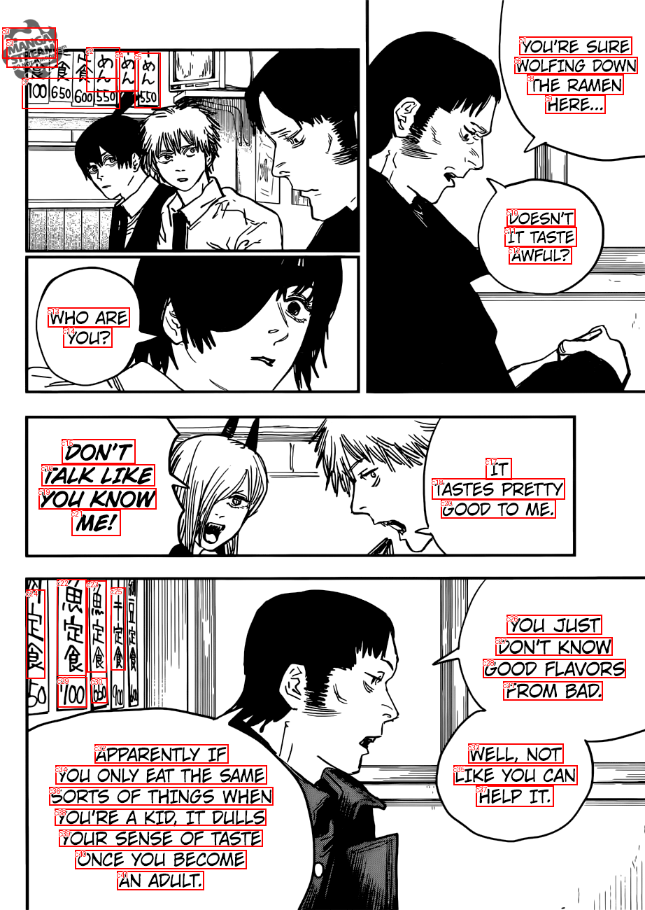
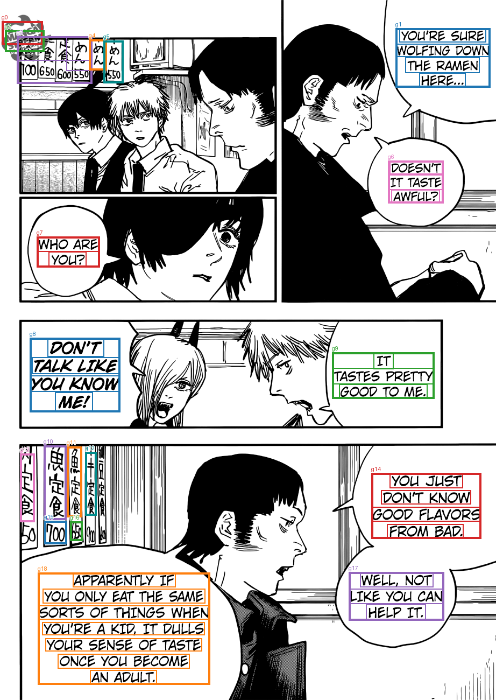

Saved TextExtractionPipeline groups, already filtered and joined. No OCR, filtering, or joining is run by diagnostics. References are comparison only; order is spatial.
Transcript TXT · All candidates and results JSON
MANGA YOU'RE SURE WOLFING DOWN THE RAMEN HERE... STREAM い 100650600550 あん めん DOESN'T IT TASTE AWFUL? WHO ARE YOU? DON'T TALK LIKE YOU KNOW ME! IT TASTES PRETTY GOOD TO ME. 魚定食 魚定食 丰定食 E食 YOU JUST DON'T KNOW GOOD FLAVORS FROM BAD. 700 5B WELL, NOT LIKE YOUI CAN HELP IT. APPARENTLY IF YOUI ONLY EAT THE SAME SORTS OF THINGS WHEN YOU'RE A KID, IT DULLS YOUR SENSE OF TASTE ONCE YOLI BECOME AN ADULT.


| Group | OCR IDs | Joined text | Target index | Reference text | Similarity |
|---|---|---|---|---|---|
| g0 | c0 | MANGA | |||
| g1 | c1, c6, c8, c9 | YOU'RE SURE WOLFING DOWN THE RAMEN HERE... | 0 | YOU'RE SURE WOLFING DOWN THE RAMEN HERE... | 1.0 |
| g2 | c3 | STREAM | |||
| g3 | c2, c7 | い 100650600550 | |||
| g4 | c4 | あん | |||
| g5 | c5 | めん | |||
| g6 | c10, c11, c12 | DOESN'T IT TASTE AWFUL? | 1 | DOESN'T IT TASTE AWFUL? | 1.0 |
| g7 | c13, c14 | WHO ARE YOU? | 2 | WHO ARE YOU? | 1.0 |
| g8 | c15, c16, c19, c21 | DON'T TALK LIKE YOU KNOW ME! | 4 | DON'T TALK LIKE YOU KNOW ME! | 1.0 |
| g9 | c17, c18, c20 | IT TASTES PRETTY GOOD TO ME. | 3 | IT TASTES PRETTY GOOD TO ME. | 1.0 |
| g10 | c22 | 魚定食 | |||
| g11 | c23 | 魚定食 | |||
| g12 | c25 | 丰定食 | |||
| g13 | c24 | E食 | |||
| g14 | c26, c27, c28, c31 | YOU JUST DON'T KNOW GOOD FLAVORS FROM BAD. | 5 | YOU JUST DON'T KNOW GOOD FLAVORS FROM BAD. | 1.0 |
| g15 | c29 | 700 | |||
| g16 | c30 | 5B | |||
| g17 | c33, c35, c37 | WELL, NOT LIKE YOUI CAN HELP IT. | 6 | WELL, NOT LIKE YOU CAN HELP IT. | 0.979 |
| g18 | c32, c34, c36, c38, c39, c40, c41 | APPARENTLY IF YOUI ONLY EAT THE SAME SORTS OF THINGS WHEN YOU'RE A KID, IT DULLS YOUR SENSE OF TASTE ONCE YOLI BECOME AN ADULT. | 7 | APPARENTLY IF YOU ONLY EAT THE SAME SORTS OF THINGS WHEN YOU'RE A KID, IT DULLS YOUR SENSE OF TASTE ONCE YOU BECOME AN ADULT. | 0.98 |
[]
[]
[]
[
{
"id": "c0",
"text": "MANGA",
"score": 0.999371349811554,
"box": [
3.0,
39.0,
79.0,
83.0
]
},
{
"id": "c1",
"text": "YOU'RE SURE",
"score": 0.9996005892753601,
"box": [
742.0,
52.0,
903.0,
78.0
]
},
{
"id": "c2",
"text": "い",
"score": 0.2614283263683319,
"box": [
123.0,
67.0,
171.0,
131.0
]
},
{
"id": "c3",
"text": "STREAM",
"score": 0.9996435642242432,
"box": [
9.0,
56.0,
82.0,
96.0
]
},
{
"id": "c4",
"text": "あん",
"score": 0.7438068389892578,
"box": [
165.0,
73.0,
198.0,
130.0
]
},
{
"id": "c5",
"text": "めん",
"score": 0.515155017375946,
"box": [
192.0,
75.0,
229.0,
154.0
]
},
{
"id": "c6",
"text": "WOLFING DOWN",
"score": 0.9995110034942627,
"box": [
735.0,
81.0,
911.0,
105.0
]
},
{
"id": "c7",
"text": "100650600550",
"score": 0.9155555367469788,
"box": [
31.0,
111.0,
171.0,
155.0
]
},
{
"id": "c8",
"text": "THE RAMEN",
"score": 0.9998497366905212,
"box": [
753.0,
106.0,
891.0,
135.0
]
},
{
"id": "c9",
"text": "HERE...",
"score": 0.9989845156669617,
"box": [
779.0,
135.0,
865.0,
162.0
]
},
{
"id": "c10",
"text": "DOESN'T",
"score": 0.9999224543571472,
"box": [
724.0,
298.0,
822.0,
323.0
]
},
{
"id": "c11",
"text": "IT TASTE",
"score": 0.9998884797096252,
"box": [
721.0,
324.0,
824.0,
352.0
]
},
{
"id": "c12",
"text": "AWFUL?",
"score": 0.9918678402900696,
"box": [
727.0,
352.0,
817.0,
377.0
]
},
{
"id": "c13",
"text": "WHO ARE",
"score": 0.9979327321052551,
"box": [
68.0,
439.0,
185.0,
467.0
]
},
{
"id": "c14",
"text": "YOU?",
"score": 0.9980206489562988,
"box": [
90.0,
467.0,
160.0,
496.0
]
},
{
"id": "c15",
"text": "DON'T",
"score": 0.9997944831848145,
"box": [
88.0,
627.0,
193.0,
662.0
]
},
{
"id": "c16",
"text": "TALK LIKE",
"score": 0.9982840418815613,
"box": [
59.0,
663.0,
221.0,
694.0
]
},
{
"id": "c17",
"text": "IT",
"score": 0.9998089075088501,
"box": [
694.0,
654.0,
731.0,
685.0
]
},
{
"id": "c18",
"text": "TASTES PRETTY",
"score": 0.9999595284461975,
"box": [
617.0,
683.0,
807.0,
713.0
]
},
{
"id": "c19",
"text": "YOU KNOW",
"score": 0.9744880199432373,
"box": [
55.0,
697.0,
223.0,
727.0
]
},
{
"id": "c20",
"text": "GOOD TO ME.",
"score": 0.9998966455459595,
"box": [
630.0,
713.0,
794.0,
740.0
]
},
{
"id": "c21",
"text": "ME!",
"score": 0.9998824000358582,
"box": [
102.0,
728.0,
172.0,
765.0
]
},
{
"id": "c22",
"text": "魚定食",
"score": 0.987726628780365,
"box": [
81.0,
827.0,
123.0,
965.0
]
},
{
"id": "c23",
"text": "魚定食",
"score": 0.9698098301887512,
"box": [
124.0,
829.0,
152.0,
960.0
]
},
{
"id": "c24",
"text": "E食",
"score": 0.39592498540878296,
"box": [
37.0,
842.0,
64.0,
969.0
]
},
{
"id": "c25",
"text": "丰定食",
"score": 0.7467071413993835,
"box": [
158.0,
839.0,
179.0,
957.0
]
},
{
"id": "c26",
"text": "YOU JUST",
"score": 0.9728204011917114,
"box": [
724.0,
878.0,
860.0,
906.0
]
},
{
"id": "c27",
"text": "DON'T KNOW",
"score": 0.9992545247077942,
"box": [
708.0,
910.0,
875.0,
936.0
]
},
{
"id": "c28",
"text": "GOOD FLAVORS",
"score": 0.9997350573539734,
"box": [
690.0,
941.0,
894.0,
968.0
]
},
{
"id": "c29",
"text": "700",
"score": 0.9992511868476868,
"box": [
82.0,
967.0,
124.0,
1010.0
]
},
{
"id": "c30",
"text": "5B",
"score": 0.2939685583114624,
"box": [
130.0,
968.0,
153.0,
1004.0
]
},
{
"id": "c31",
"text": "FROM BAD.",
"score": 0.9998820424079895,
"box": [
719.0,
973.0,
861.0,
1000.0
]
},
{
"id": "c32",
"text": "APPARENTLY IF",
"score": 0.9994924068450928,
"box": [
135.0,
1063.0,
326.0,
1090.0
]
},
{
"id": "c33",
"text": "WELL, NOT",
"score": 0.9910305738449097,
"box": [
669.0,
1062.0,
805.0,
1090.0
]
},
{
"id": "c34",
"text": "YOUI ONLY EAT THE SAME",
"score": 0.9663641452789307,
"box": [
79.0,
1093.0,
381.0,
1120.0
]
},
{
"id": "c35",
"text": "LIKE YOUI CAN",
"score": 0.924072265625,
"box": [
648.0,
1093.0,
825.0,
1121.0
]
},
{
"id": "c36",
"text": "SORTS OF THINGS WHEN",
"score": 0.9859182238578796,
"box": [
70.0,
1124.0,
390.0,
1150.0
]
},
{
"id": "c37",
"text": "HELP IT.",
"score": 0.9995295405387878,
"box": [
680.0,
1122.0,
791.0,
1152.0
]
},
{
"id": "c38",
"text": "YOU'RE A KID, IT DULLS",
"score": 0.9963492751121521,
"box": [
78.0,
1155.0,
380.0,
1179.0
]
},
{
"id": "c39",
"text": "YOUR SENSE OF TASTE",
"score": 0.984660804271698,
"box": [
84.0,
1185.0,
375.0,
1209.0
]
},
{
"id": "c40",
"text": "ONCE YOLI BECOME",
"score": 0.9336841106414795,
"box": [
107.0,
1214.0,
352.0,
1241.0
]
},
{
"id": "c41",
"text": "AN ADULT.",
"score": 0.9989617466926575,
"box": [
167.0,
1244.0,
291.0,
1271.0
]
}
]